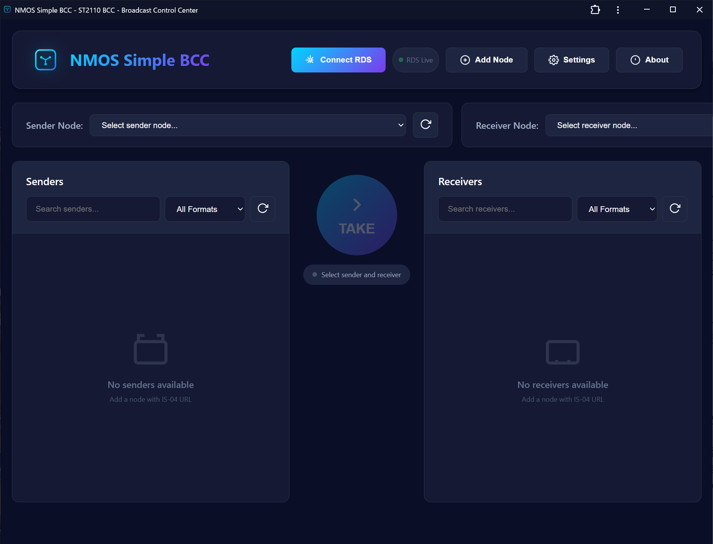

NMOS Simple BCC
Browser-based Connection Controller
Browser-based Connection Controller
概要
NMOS Simple BCC（Browser-based Connection Controller）は、IS-04 / IS-05環境を管理するためのWebアプリケーションです。現代的なWebブラウザで開くだけで、NMOSレジストリに接続してセンダーとレシーバーの制御をすぐに開始できます。
Stream Deck連携により、ハードウェアボタンに個別のコネクション操作を割り当てることが可能です。ライブ制作現場でのタクティルな操作に最適です。
主な機能

クイックスタート
ブラウザでBCCを開く
ツールのURLにアクセスします。インストールやローカルサーバーは不要で、すべてクライアントサイドで動作します。
IS-04レジストリエンドポイントを設定する
NMOSクエリAPIのベースURL（例: http://registry.local:3211/x-nmos/query/v1.3）を入力します。ノード・センダー・レシーバーが自動的に取得されます。
センダーとレシーバーを選択する
左列のセンダーをクリックし、次にレシーバーをクリックしてコネクションダイアログを開きます。確認するとIS-05 PATCHリクエストが実行されます。
（任意）Stream Deckを設定する
BCC Stream DeckプラグインをインストールしてWebSocketでペアリングします。センダー/レシーバーの組み合わせをボタンに割り当て、ライブ制作中のワンタッチ切り替えを実現できます。